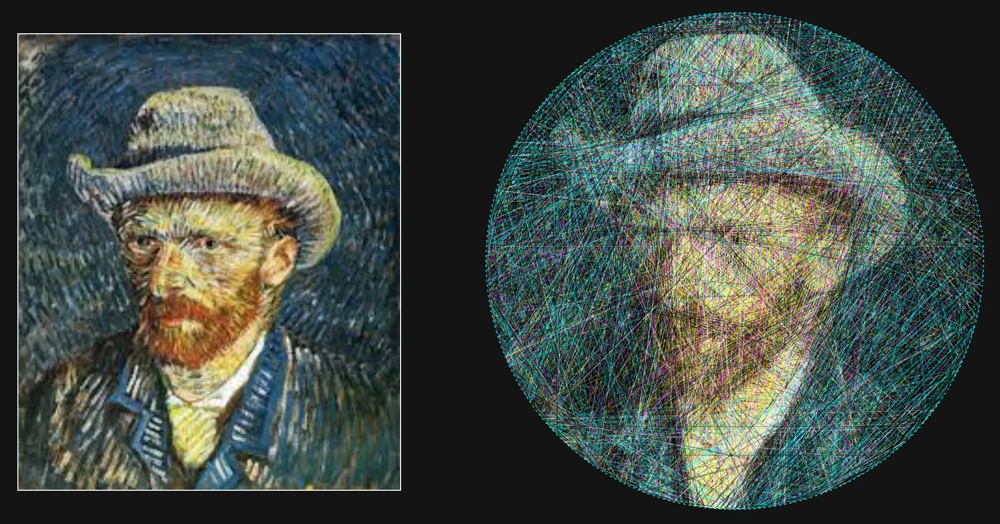
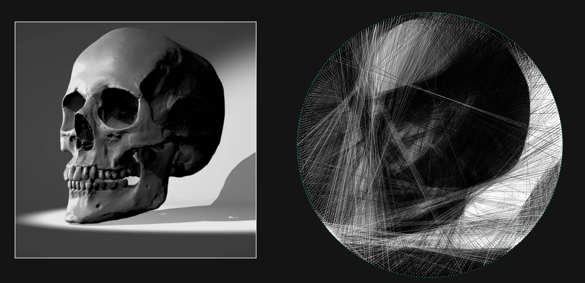
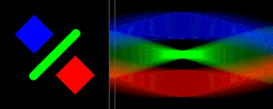

Generalized String Art Generator
11.01.2023See the code here: https://github.com/usedhondacivic/string-art-gen
Use the full tool at https://michael-crum.com/string-art-gen/
What is String Art?
String art, the process of creating images using a continuous string wrapped many times around a frame of nails, was pioneered by engineer and artist Petros Vrellis. The process seems like magic, creating order from a fundamentally chaotic tangle of string. The problem's unique mix of elegant engineering with physical beauty spoke to me, so I decided to create my own open-source implementation.
There are many videos attempting to explain the string art algorithm in simple ways, but they all leave out crucial details required for an actually decent result. Some people even have good reason to keep the algorithm obfuscated for monetary gain. However, I believe the math and logic behind the algorithm is just as beautiful as the end result. This article is meant to give some insight to those hoping to write their own implementation.
Of course, I had to add my own spice to the algorithm. Publicly available implementations all make a variety of limiting assumptions that reduce the creative freedom of the user. Commonly the size and shape of the frame are completely fixed (and just a boring circle), the color of the thread is fixed, and the number of colors is limited to one or two. Using principled software development, I was able to avoid all of these constraints and give the user ultimate creative control over their piece.
In this article I first explain the mathematical background of the algorithm, then dive into the details required to get good results. But before I start, here are some example pieces generated using the tool.
Gallery

And here's a real-life piece made with black and white string.
This piece took 12 hours of labor for 3200 connections in total.
From String to Image
When developing a new algorithm, I like to avoid information paralysis by first breaking it down to its core components. Thinking of the algorithm as a blank box, what are the desired inputs and outputs? Obviously, we have an image, and we should also supply information about the frame (number of nails, shape, size, etc.). On the other side of the algorithm, we need some representation of the string that will allow us to actually construct the image in the real world. My choice was to number each nail

Knowing the output provides a good starting point for our algorithm - at each iteration, we need to pick which nail we want to connect to our current nail. This nail will be next in the list, and so on until we have the whole image.

What I've described so far is known as a "greedy algorithm". It's greedy in the sense that at each iteration, the algorithm makes the decision that is best for it only at that moment. It doesn't consider the effect down the road or on any previous steps, just the current state. This is good because it drastically decreases the compute time for each step, but is bad because the algorithm will have no sense of how the strings "work together" in the final product. In this instance, the greedy approach gives a good approximation in excellent time. In other cases, you might look into dynamic programming to get a better solution.
We Have Gradient Descent at Home
Now we have a tractable greedy step: given our current nail, find the best nail to move to next. Best, in this context, means the nail that, when connected, will cause the greatest improvement in the approximated image. It can also be thought of as the connection that minimizes the difference between the approximated image and the real image (also known as the error). Following the connection that minimizes error, updating the image to show the new connection, and repeating will result in an approximated image that eventually converges to the real image.
If you've studied computer science, optimization, or machine learning, the steps I outlined may sound very familiar. The greedy approach to the string art algorithm reduces to gradient descent! While knowledge of gradient descent isn't necessary to understand this article, it's a great algorithm for your toolkit and is useful for many optimization problems.
To use gradient descent we need to be able to calculate the error. As stated above, the error is the difference between the approximated image (the one being built from the string) and the original error. On computers, images are represented as pixels. Each pixel, in turn, is represented by three numbers representing red, blue, and green. For an image of size
In English, this subtracts the colors of each pixel in the approximated image from each pixel in the original image and then finds the length of that vector.
To select the next connection, we need to calculate the gradient with respect to each nail that could be the next connection, then take the minimum. Because we have a discrete number of options for the next nail, we can use a finite difference approximation to calculate the gradient. That is to say, we want to find the
In this equation,
Great! We can now use gradient descent to minimize the error, leading to a high-quality image approximation! Right?
Taking Fear Out of the Machine
The implementation so far works poorly on real images. The first issue becomes obvious pretty quickly:
None of the details get captured! This is a side effect of how we calculate the error. Imagine running the algorithm on the following image, starting with a black background and using a white string:
In order to show the white dot, the algorithm must choose to lay down a white string. By laying down a white string over the dot, the string would correctly color the dot white but incorrectly color the black background along the rest of its length. Placing the string would greatly increase the error of the image, so the algorithm would never choose to do so.
To fix it, we must think a bit more about the problem we are trying to solve. The error function currently believes that errors are unfixable. It gives equal weight to how much the string messes up the image as it does to how much it improves the image. In reality, we know that incorrect colors can later be covered by a different string, correcting for the error in the past iteration. In order to capture detail in the image, we need to represent this fact in our minimization problem. We currently have
The quantity
In a turn of phrase, this can be thought of as allowing the algorithm to run without fear. It is no longer afraid of ruining existing progress with a new string because it knows that any generated error can be fixed by a future layered string.
Now the results are getting better:

However, now we have the opposite problem - the algorithm is focusing too much on small details and making the whole image unclear.
Reverse Robot Optometry
However, there is still more room for improvement. Right now, the algorithm is looking at the string with perfect robotic eyesight. It understands each string as a separate bar of color, no matter what is happening near it. Human eyes naturally blur nearby objects, averaging their colors together. Look to pointillism for examples of artworks made exploiting this effect.
Because the algorithm cannot blur the colors together, it has no concept of shading or color mixing. This leads to blocky images and poor performance when multicolor strings are used.
To fix this, we need to effectively blur the algorithm's perception. A common approach is to use convolution, but this approach is extremely computationally expensive. Instead, we can simply lower the resolution of the images we feed to the algorithm.
In my setup, I preprocess the image and resize it such that one pixel corresponds to the diameter of the thread I plan to use. This simplifies the string drawing routine for the simulated string so I can just fill any pixel it passes through with the string's color. To blur the algorithm's perception, I again downscale the image by some factor
Rendered strings without downscaling (top), vs rendered strings with downscaling (bottom). Notice the color mixing in the center of the bottom image.
This both simulates the blurring effect of human eyes and reduces computation time due to a lower effective image resolution.
After this improvement, we're really getting somewhere.
Performance
While it's easy to come up with an algorithm that will solve a problem eventually, it's much harder to find one that solves it efficiently. As an example, we could generate every single 10,000-length nail order and find the one that generates the best image. This would generate a perfect image every time, but for an image with 300 nails, it would require checking
The algorithm presented here is much better, but still isn't quick enough for the responsive web app I was envisioning. The big bottleneck is evaluating the error function
This iterates over all
The optimization comes from realizing what we actually need to evaluate. Why are we looping over every pixel in the image, when each line only changes the pixels it runs over? If we could only consider those points, we could lower the image comparison from
Through some imaginative abuses of notation, we can write:
In code, this change will simply be changing the loop to run over only pixels that intersect the new string rather than all pixels in the image. To calculate the relevant pixels I used the Bresenhams line algorithm, which is a common fixture of computer graphics.
Let's Get Colorful
So far, I haven't addressed the notion of color whatsoever. By taking a mathematical approach to the problem, we've stumbled across an algorithm that can be generalized to any number of colors and number of strings.
The key implementation question lies in computing
within the error function. As a reminder, this value is pixel
Let's let the color of line
As discussed above, I'm also applying a transparency of
In practice, this is implemented independently on each channel (red, blue, and green).
There is a lot to be said about the validity of this approximation. The human eye is much more sensitive to greens and yellows than it is to blues and reds, so for a more accurate color mixture those colors should be emphasized. My color theory is no good though, so I chose to ignore the problem with a "good enough" solution.
Now that
Tying it all together
So far I've refrained from presenting any code in an effort to keep the algorithm language agnostic. Reading through code line by line is a huge pain, and is a poor way to communicate concepts. If you've gotten this far, though, you are probably interested in writing your own implementation. You should now be prepared to read through my code, which is available here.
I've tried to add comments that map to the sections of this article, so reference back here if any part is confusing. If you need any further help, feel free to reach out to me at the contacts listed on my home page!
The UI Honey Pot
Few, that was a lot of work to design that algorithm. It would be a shame if no one ever used it. So how do you make people actually want to engage with your tool?
How to Make a Tool People Will Actually Use
The simple truth is that no one will ever download and run your Python program or C++ executable, no matter how cool it is. An easily accessible web tool that produces a worse product will always win out, simply because the average user is both non-technical and in a rush to get a result.
So if you want people to actually see your hard work, your tool needs to be hosted, interactive, and attractive. These are the non-tangibles that are often non-intuitive to technical people, yet are sometimes more important than the work itself. I've written an article on creating this website that could serve as a great starting point for hosting your own website. GitHub Pages is a godsend, and (in my opinion) is the clear choice for free web hosting today.
My implementation is in JavaScript, as I was targeting a web deployment from the beginning. If you really love your Rust, Python, or other language of choice, and have your heart set on using it, consider writing an API to serve the results to a simple web front end. Amazon Web Services is a popular choice in that domain.
A Love Letter to D3.js (and SVG)
For interactive visuals and data visualizations, I've fallen in love with D3.js. D3 leverages the power of Scalable Vector Graphics (SVG) to create fluid visualizations that look incredible. SVGs were designed from the beginning to work on the web, meaning that they are universally supported and blazingly fast. No more worries about bespoke visualization packages that might break with the next update of Chrome.
For this project, I took advantage of the built-in zoom and pan behavior to allow users to inspect the work from multiple scales. The ability to move around the visualization creates a playful experience, making the user more likely to experiment and spend more time on the site.
Keeping it Simple
I commonly see developers over-rely on the latest Javascript libraries instead of just stopping to think for a second. As a humorous yet slightly depressing example, take the NPM package is-odd. With almost 300k weekly downloads, the package does exactly what it's named for: tell you if a number is odd.
Instead, developers should reach for the rich variety of tools already packed into Javascript. The UI in my tool, is programmatically generated using pure Javascript. Take the buttons for example:
class UIElement {
constructor(desc, name, parent, callback, label) {
this.desc = desc;
this.name = name;
this.parent = parent;
this.callback = callback;
if (label) {
this.label = document.createElement("label");
this.label.for = name;
this.label.innerHTML = desc;
parent.appendChild(this.label);
}
}
}
class Button extends UIElement {
constructor(desc, name, parent, callback) {
super(desc, name, parent, callback, false);
this.element = document.createElement("button");
this.element.id = name;
this.element.innerHTML = `<b> ${this.desc}</b>`;
this.element.addEventListener("click", callback);
parent.appendChild(this.element);
}
}
let basic_options = document.getElementById("basic");
let GUI = {
init() {
// Download =
this.nail_seq_download = new Button(
"Nail sequence",
"nail_sequence",
download,
() => {
graph.download_nail_seq();
});
this.frame_download = new Button(
"Frame with numbering",
"frame_download",
download,
() => {
graph.download_frame();
});
// Basic
this.regenerate = new Button(
"Regenerate",
"regenerate",
controls,
() => {
render_image()
});
}
}
No React, no bootstrap, no huge dependency list, and it does exactly what it needs to do and nothing more. Software bloat is the quickest way to make you hate your own project and never finish it, so fight the urge to pick up the shiniest library whenever the going gets tough.
Further Research: Computed Tomography and Fast Fourier Transforms
This project took me down an interesting rabbit hole worth some further exploration. I want to briefly cover it here, in hopes someone will take a crack at them down the line.
To my surprise, I realized the string art problem is the exact inverse of what CT scans are doing. With string art, the goal is to take an image and decompose it into chords of varying densities (brightnesses). In CT scans, an emitter and sensor are used to detect the density of a subject along a line. By collecting data points in a full circle around the subject, it is possible to reconstruct a crossectional image from just the density readings.
The Radon Transform
The Radon Transform is the function formed from taking several perpendicular density readings.

The Radon transform performed along horizontal scanlines and the resulting signal. Animation courtesy of Wikipedia
The reconstruction technique is known as the Radon Transform and takes advantage of the Fourier Slice Theorem. The Fourier Slice Theorem shows that the Fourier Transform of the Radon transform of reading forms a radial "slice" of the 2D FFT of the original image. After using the slices to recreate the 2D FFT, an inverse FFT results in the reconstructed image.
But how is this useful for string art? The quick answer is computation speed. Instead of computing the error function discretely for each string, we could sample the 2D FFT of the image, and then use the inverse of the Fourier Slice Theorem to reconstruct the FFT of the candidate connections. The inverse FFT would then allow us to sample the errors of each connection.
I'm unsure if this would actually speed up the processing speed, and I don't have time to try and implement a solution based on this concept. If you choose to try, I would recommend checking out this paper which presents a fan beam generalization of the reconstruction process, which is more relevant to the string problem. Also, send me an email. I'd love to see this implemented!
Conclusion
Generative, algorithmic art is a wonderful area to explore. Selfishly I hope my journey can inspire and aid in the creation of other works so that I can enjoy viewing them.